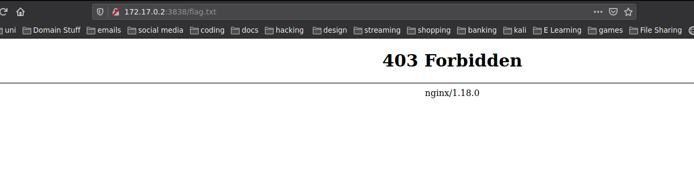

Week 2
Web Enumeration ctf So you know start your docker instances and let's hack! 8 Flags inside this machine
Every time first thing to do Nmap scan

Look at your scan results. So we have one port open 3838/tcp and we have at least one directory '/legal' and one file robots.txt and the box is running nginx.
First thing lets open the browser and navigate to 172.17.0.2
 Get a good look at the source code and the style.css and should be able to find the flag1.
Well this week is all about list and enumerating web apps so let's do it. You have a lot of tools from gobuster, ffuf, dirbuster and etc.
I'll be using dirbuster. Dirbuster is better for recursion.
Get a good look at the source code and the style.css and should be able to find the flag1.
Well this week is all about list and enumerating web apps so let's do it. You have a lot of tools from gobuster, ffuf, dirbuster and etc.
I'll be using dirbuster. Dirbuster is better for recursion.

 Looks like we have a lot more inside this Web App.
Looks like we have a lot more inside this Web App.
Robots.txt
Lets go to robots.txt. Robots.txt is always a good spot to look for flags in ctfs and sometimes u can get information about other directories will you wait for your scans and scripts to end. You should have one flag2.
/legal/
How boring can we be? Actually is always good to remind you guys we are living in the grey area. Here you have the first 2 sections of the Computer Misuse act 1990. Opens your eyes cause in the middle of all of those words you should be able to find flag3 you just need to loose and 10 secs in cyberchef and one more is done.

/legal/papers
Hm how good are you at web dev? Do you guys know which tags you can use while inserting an image? Do you what the alt tag does? If you don't while do a brief explanation. So inside the alt='' tag you will have alternate text that will be shown when the image cannot be displayed. Look at the alt tag for this image and flag4 is done.
404
404 is a page that can be really important for the attacker if not well setup. From the 404 page we can sometimes extract important information for example the version of the distro or server ,etc. This kinds of information can be really important sometimes to find CVES and other vulns.
By the Way always check the source code.

.well-known/security.txt
Have you heard of this directory before if you don't you can get an idea security.txt. Always good to check.
Flag.txt
Looks like we can't see this file maybe after getting our reverse shell we will be able to. 
wp-content
Let's go back to the dirbuster scan, you have a page called wp-content. For the people that don't know this is the standard page for uploading files in wordpress. Get your reverse shells from pentestmonkeys upload the file. It will appear as a link in the same page. Before clicking it, run your netcat in the terminal

nc -lvnp 1234
Navigate to /var/www/ and cat the flag.txt Flag7 only one left. Let's get root. So without using any script lets enumerate the SUID permissions using
find / -perm /4000 2>/dev/null
sudo -l
 If you do id now you will be able to see you are root.
If you do id now you will be able to see you are root.

cat /root/flag.txt